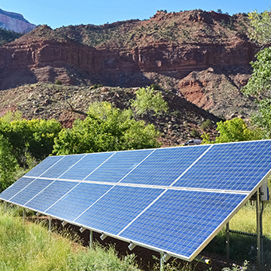

This common renewable, green energy source is usually produced using photovoltaic cells that capture sunlight and turn it into electricity. Solar power is also used to heat buildings and for hot water as well as for cooking and lighting. Solar power has now become affordable enough to be used for domestic purposes including garden lighting, although it is also used on a larger scale to power entire neighbourhoods. Solar energy is the energy generated by the sun and radiated through space, mostly as visible and near-infrared light. It sustains nearly all life on Earth. When sunlight strikes a surface on our planet, thermal energy, also called heat, is produced. This thermal energy drives several global phenomena, including the water cycle, wind patterns and ocean currents. Photosynthesis, the process by which plants produce their own food, occurs through the conversion of sunlight into chemical energy.The natural conversion of sunlight into other forms of energy has inspired the ways humans capture and use this energy. Broadly speaking, there are two methods of using solar energy: passive and active. Passive solar methods are those that use sunlight directly (e.g., lighting and heating a room through a window). Active methods use technology to convert solar energy into a secondary form (e.g., a fluid or electricity) that has its own use.
Adam Jones, et al. "Advances in parabolic trough solar power technology." J. Sol. Energy Eng. 124.2 (2002): 109-125.
Solar Power
